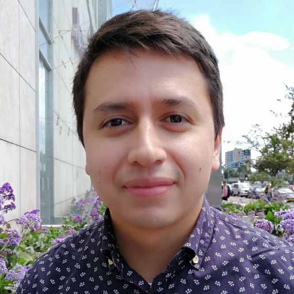
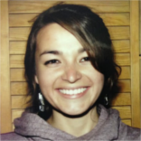
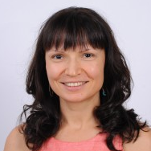
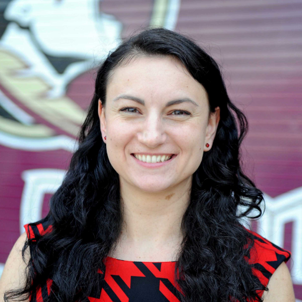
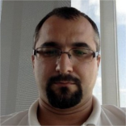
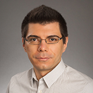

Faculty
Professor
Graduate Students
Alumni

Ph.D. (2019)
Assistant Professor in the Department of Computer Science at William and Mary

Ph.D. (2016)
Assistant Professor in the Department of Computer Science at Colorado State University

Postdoc
Associate Professor in the School of Electrical Engineering and Computer Science at Washington State University

Ph.D. (2013)
Associate Professor in the Computer Science Department at the Florida State University
Ph.D. (2012)
Associate Professor at Universidad Nacional de Colombia, sede Bogotá
Ph.D. (2008)
Chancellor Professor of Computer Science and Graduate Director at the College of William & Mary


Denise Comorski
M.S. (2005)
at EDS
Andrey Sergeyev
M.S. (2005)
Currently working Parametric Technology Corporation, first position after graduation at Dimensional Control Systems
Xinrong (Travis) Xie
M.S. (2006)
at PayPal
Yubo Dong
M.S. (2007)
at PPI Technical Communications

Gabriel Ciuloaica
M.S. (2006)
at Nokia Romania

M.S. (2009)
Clinical Assistant Professor in the Department of Computer Science at Boise State University